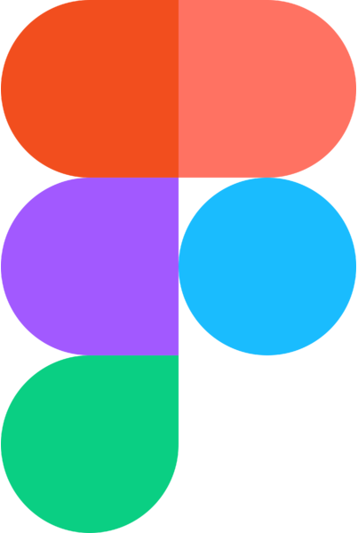
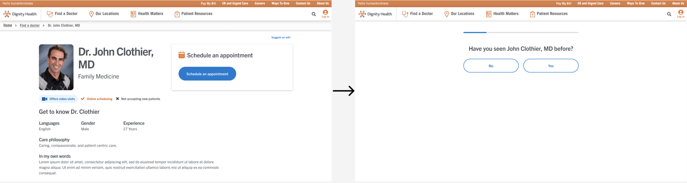

Overview
- Background: Online appointment scheduling is a large area of focus for our business, as appointments are one of the main drivers of revenue. Due to the complexity of our online scheduling system, we saw many users dropping off before completing their bookings or booking the wrong appointment type, causing extra work for the clinic staff.
To resolve this, our team conducted user surveys (both patient and clinic staff), interviews with clinic staff, competitive research, and user testing with patients to create a guided scheduling flow that helped make the appointment booking process easier. - Duration: June 2020 - August 2020 (3 months)
- Status: Launched 🚀
- My Role: Ideation, User Research, Competitive Analysis, Wireframing, Prototyping, User Testing, UX/UI Design
- Tools:FigmaUserzoom
Objectives + project plan
Goals + success metrics
Before beginning work, the first step I took was to gain shared understanding with stakeholders and product management of the business goals:
- Increase revenue by increasing # of appointments scheduled
- Improve patient satisfaction and retention
- Reduce costs associated with call center and clinic staff
Based on our goals, I worked with the product manager to define these success metrics:
- 📈 Increase in # of scheduled appointments
- 📉 Decrease in # of drop-offs during scheduling process
- 📈 Increase in conversion rate*
Project plan
After identifying success metrics, I laid out a project plan for the design and research activities that would take place over the next 3 months. I broke the work up into phases with corresponding user stories and defined timeframes. This plan would serve as a guiding framework for the upcoming design process, but was intended to be flexible to adjust as needed.
Project plan
Research + concept
User research
Our team began by launching 2 user surveys: one with patients and one with clinic staff. We also conducted 20 follow-up interviews with receptionists, call center reps, and clinic operation supervisors/managers. Some of our key findings included:
60%
of users prefer to use online scheduling methods for appointments
40%
are likely to switch providers if online scheduling doesn't work
80%
of clinic staff regularly reschedule appointments made online by patients
Based on these findings, our team recommended:
- Creating a guided scheduling flow
- Renaming appointment types and adding descriptions to improve understanding
- Improving clarity of the patient and visit information forms
- Focusing on task accomplishment
Competitive analysis
To add another perspective to our user research, I looked at 3 categories of competitors to see what could be learned from each of their online scheduling experiences:
- Other healthcare systems, e.g. Kaiser Permanente, Sutter Health, Banner Health, etc.
- Modern healthcare tech companies, e.g. One Medical, ZocDoc
- Non-healthcare industry competitors, e.g. fitness companies like ClassPass, restaurant reservation services like Resy, etc.
I discovered similar themes, and sought to incorporate these into my designs:
- Guided approaches seemed to work best
- A focus on simplicity and task accomplishment
- Reduce friction where possible (e.g. asking only for necessary information, allow for guest scheduling)
Initial design
Wireframes
Using Figma, I created two wireframe options for adding a guided approach to the Online Scheduling product:
- Option 1 was a contained scheduling widget on the doctor profile page with multiple steps
- Option 2 launched a new page with step-by-step questions

Option 1
Option 2
Prototyping + user testing
I created prototypes in Figma and launched 2 usability tests in Userzoom, 1 for desktop and 1 for mobile responsive, which received 150 and 115 responses respectively.
I found that users were able to complete their task of scheduling an appointment 5-6 seconds faster using Option 2 instead of Option 1. Ease of use scores were fairly similar across options, though Option 2 outperformed Option 1 on desktop.
Usability test results
Some of the qualitative feedback I received:
- “There was a lot of information on that page which could get quite overwhelming while I’m trying to schedule an appointment”
- “The scheduling area kind of blended in too much with the rest of the information on the page”
- “It’s easier not looking at multiple questions at a time.”
Based on this feedback, I made adjustments to the designs.
High-fidelity mockups
The finalized design is a guided, step by step process that makes it easy for the user to select the right appointment type, whether they are using a computer or their mobile device. It is fast, easy-to-use, and users can keep track of their progress through the flow with the progress indicator.
Guided scheduling flow
Outcomes + conclusion
Within the first 10 weeks of launching the new appointment scheduling flow, we saw a 20% increase 📈 in conversion rate*.
The total # of appointments booked remained about the same, but we look forward to continuing to monitor the impacts of the new design on our success metrics over time.
If we had more time on this project, I would have loved to update the names of the appointment types and add descriptions to improve user clarity. It was one of our initial recommendations that we began work on in partnership with business stakeholders and our copywriter, but unfortunately we ran into some technical limitations that prevented us from including it in our launch.